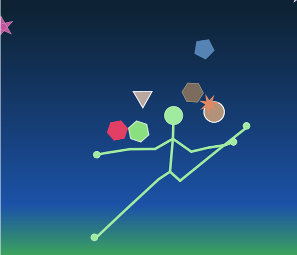

逆さまの棒人間ゲーム

あなたの動きに合わせて動く棒人間を使ってゲームをします．
棒人間は最初，あなたの通りに動きます．しかし、途中からは右手を上げると左手を上げたりと挙動が変化します。
変化のパターンは4つあります：１．普通２．左右逆転３．手と足逆転４．左右上下逆転
ゲーム時間は約1分で，時間がたつにつれて難しい操作が要求されます．
Play a game as a match-man. In this game, the match-man which user controlls, moves as user controlls in the beginning.
However, the match-man will do some strange actions in the game. There are 4 patterns:1.normal; 2.reverse left and right; 3.reverse hand and foot;
4.reverse up and down. The game lasts about 1min, and it becomes harder to play during the game, in which the match-man becomes harder to control.